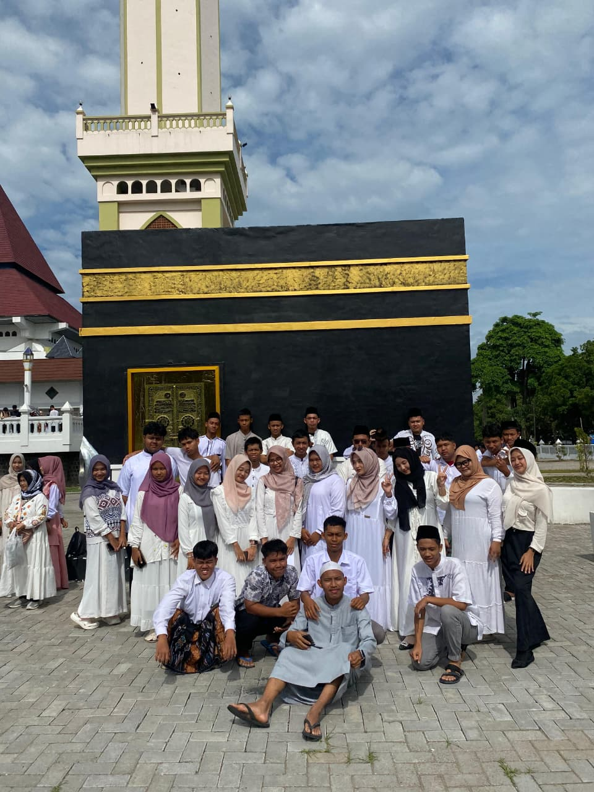
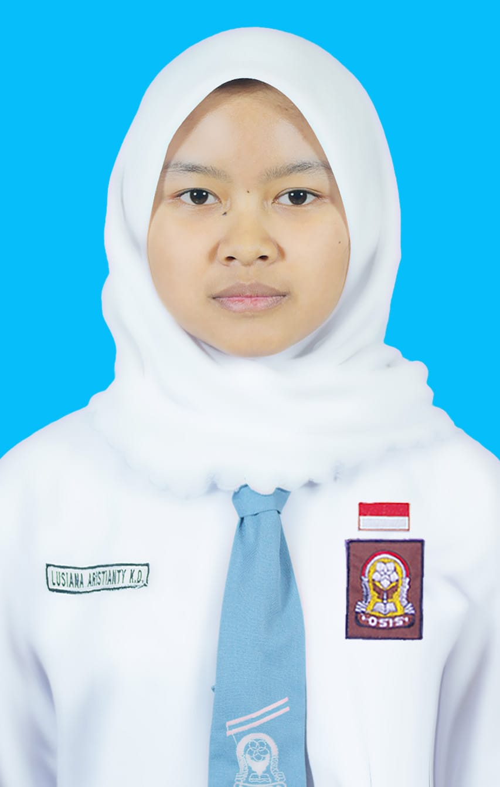

ARSIP KENANGAN · KELAS XI TKJ 2
Semua cerita kita, tersimpan di sini.
Sebuah album digital untuk mengingat perjalanan TKJ 2: kebersamaan di kelas, kegiatan sekolah, dan teman-teman yang membuat setiap harinya berarti.

Tentang kelas
Kelas TKJ 2
Tahun 2024-2027
40 Siswa
27 Laki-laki, 13 Perempuan
Wali Kelas Saat ini
BU ERIN
Lab. Komputer 1
Lantai 2
Jelajahi cerita
Profil Wali Kelas

Bu Ester
Wali Kelas X TKJ 2 · Sebelumnya
Mata Pelajaran
Ilmu Pengetahuan Alam & Sosial (IPAS)
Gelar
Sarjana Pendidikan

Bu Erin
Wali Kelas XI TKJ 2 · Sebelumnya
Mata Pelajaran
Pendidikan Kewarganegaraan (PKN)
Gelar
Sarjana Pendidikan
Bu Erin
Wali Kelas XII TKJ 2 · Saat Ini
Mata Pelajaran
Pendidikan Kewarganegaraan (PKN)
Gelar
Sarjana Pendidikan
Daftar 40 Siswa Kelas XI TKJ 2
40 Siswa (27 Laki-laki, 13 Perempuan)
Struktur Kelas XI TKJ 2
Ketua Kelas
MUHAMMAD NURIL ARIFIN
Wakil Ketua
MUHAMMAD NASRUL MUKMIN

Sekretaris 1
LUSIANA ARISTIANTY K. D.
Sekretaris 2
FITO AZKA WIRADANA
Bendahara 1
NAFISHA SALSABILA W.
Bendahara 2
JONATAN KRISTIAN
Komentar ke Admin
Pesan hanya tampil selama halaman ini terbuka. Saat dikirim, WhatsApp admin akan terbuka; komentar tidak disimpan atau ditampilkan untuk umum.
Belum ada komentar